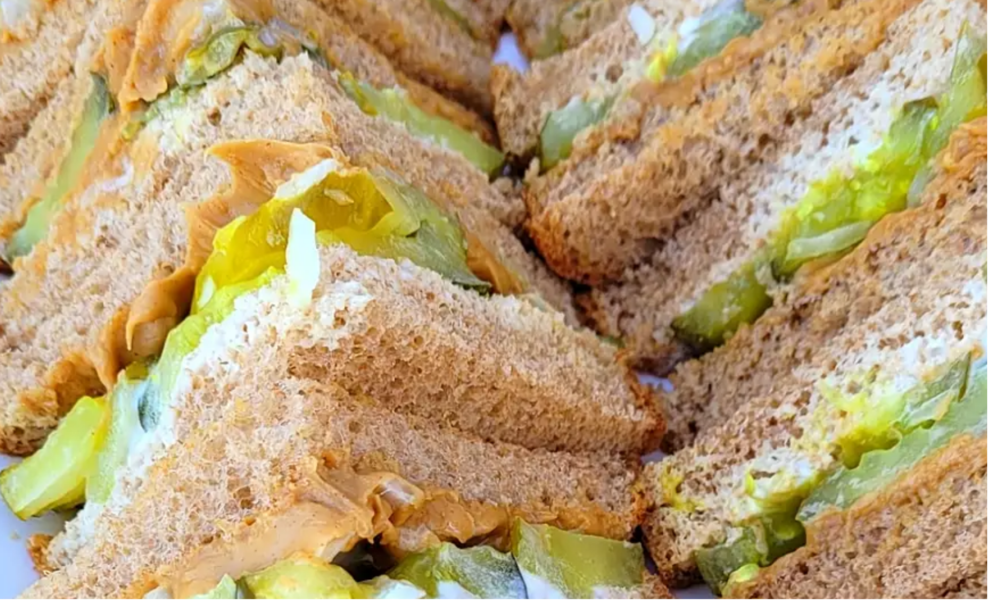

Poor Man's Sandwich

description
361 calories; protein 13.9g; carbohydrates 31.2g; fat 21.6g; cholesterol 3.5mg; sodium 971.1mg. Full Nutrition
Ingredients
- 1 ½ tablespoons creamy peanut butter
- 2 slices whole wheat bread
- 6 slices dill pickle
- 1 tablespoon thinly sliced onion
- 2 teaspoons mayonnaise
Steps
-
Spread peanut butter onto one slice of the bread. Place pickle slices and onion slices onto the peanut butter. Spread mayonnaise onto the other slice of bread, and place on top of the other piece of bread.